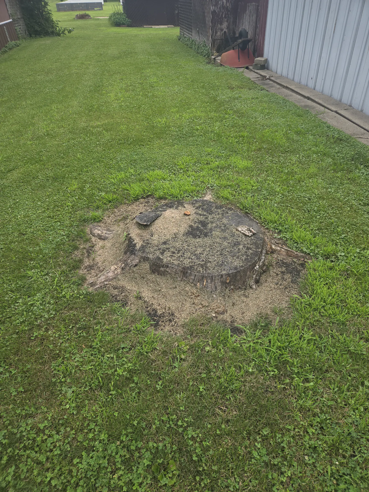
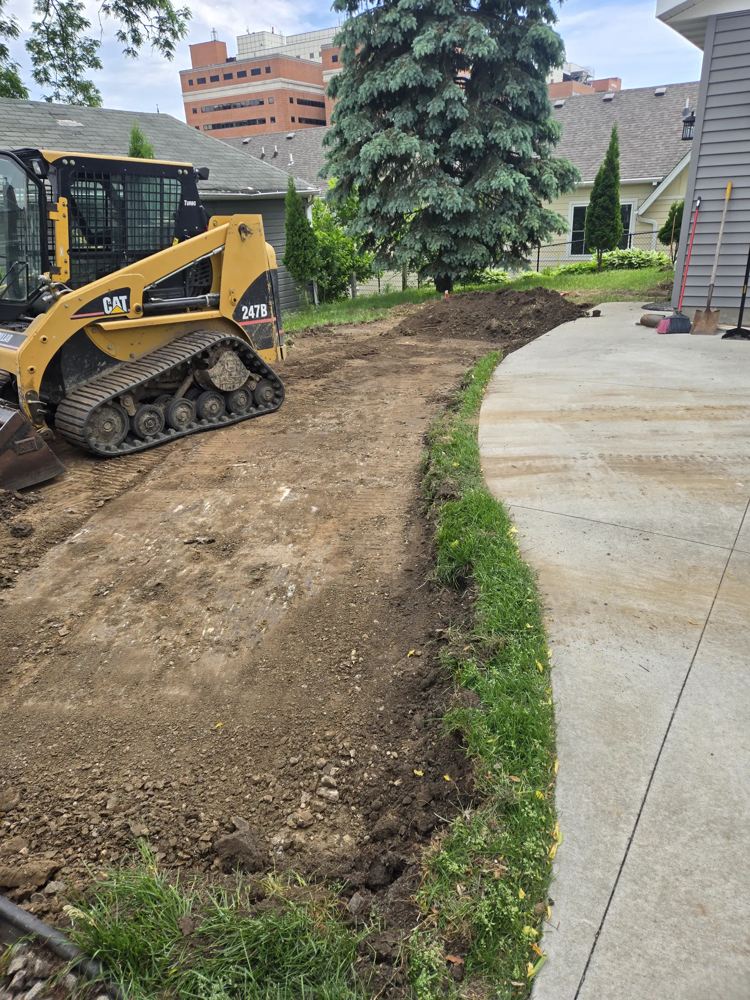
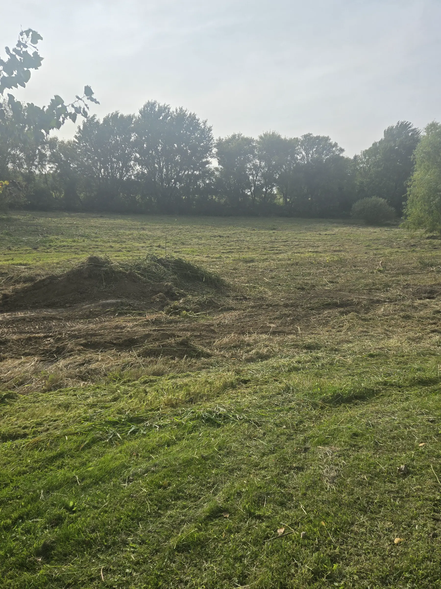
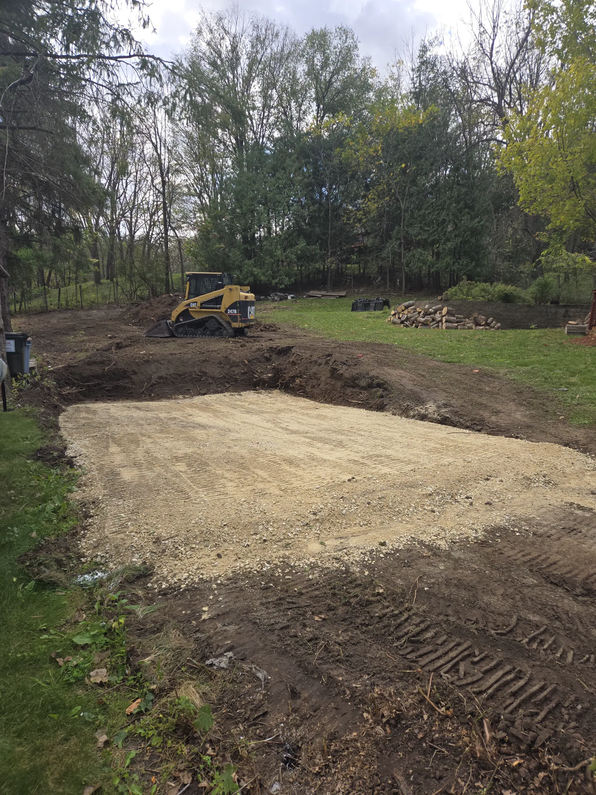
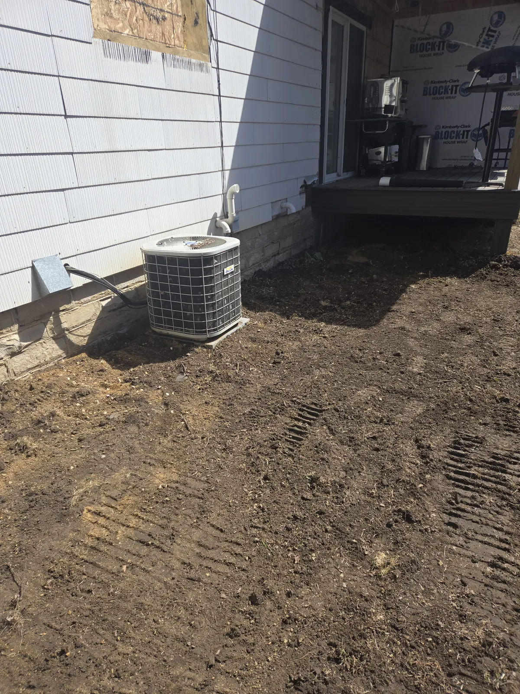
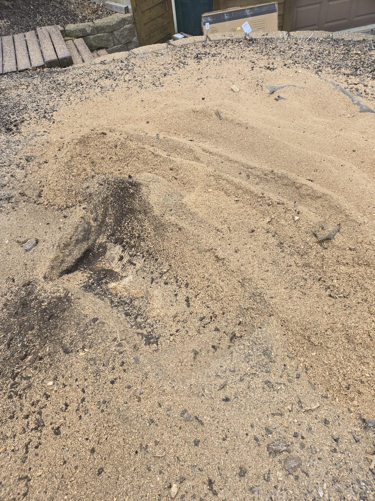
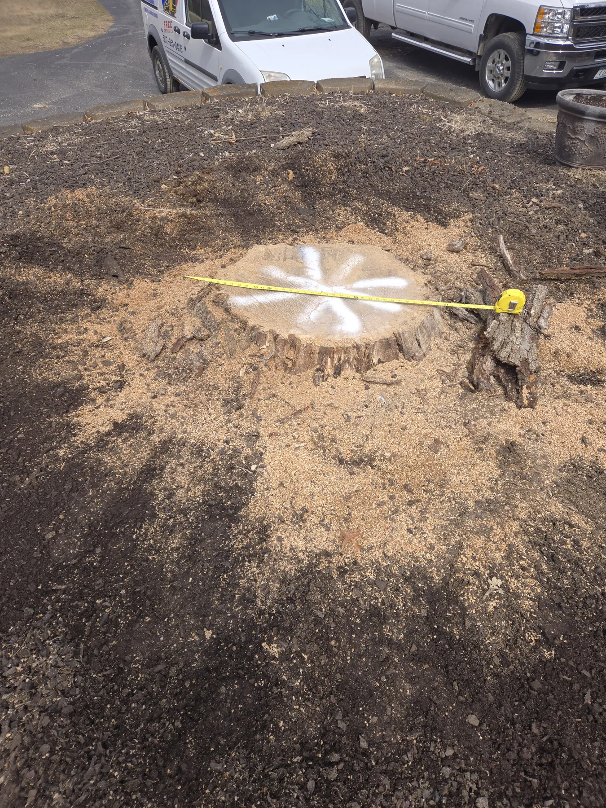

Stump Grinding
Remove unwanted stumps and prepare yards, fence lines, landscaping areas and construction spaces.
View service details →MGD services
MGD Skid Loader Services provides seven core services for residential, rural and contractor projects within a 50-mile radius of Mazeppa, Minnesota.

Remove unwanted stumps and prepare yards, fence lines, landscaping areas and construction spaces.
View service details →
Reshape, grade and refresh gravel or dirt driveways to improve drainage, appearance and drivability.
View service details →
Clear brush, tree debris, logs and unwanted material from yards, lots and project areas.
View service details →
Grade, clear and prepare areas for garages, sheds, additions and other building projects.
View service details →
Break out, remove and clear unwanted asphalt and concrete from renovation and property projects.
View service details →
Takedown and removal of sheds followed by grading and site preparation for the next use of the space.
View service details →
Auger hole drilling from 6 inches through 24 inches for deck posts, fence posts and related projects.
View service details →